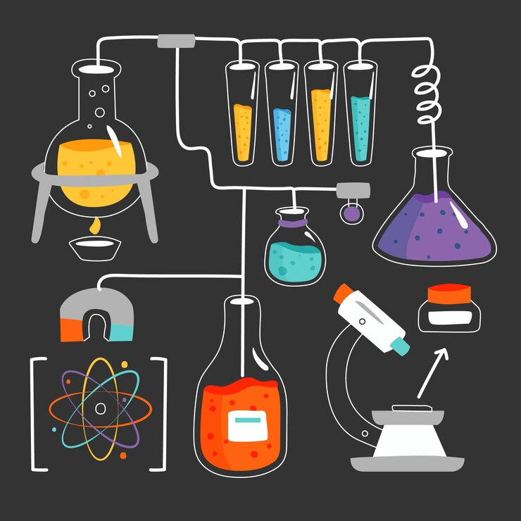

Bio-chemistry
Introduction :
Biochemistry is a multidisciplinary field that explores the chemical processes and substances that occur within living organisms. It delves into the molecular mechanisms underlying various biological phenomena, ranging from the structure and function of biomolecules to the intricacies of cellular processes. By studying the interactions between molecules such as proteins, nucleic acids, lipids, and carbohydrates, biochemists aim to unravel the fundamental principles governing life. This field plays a pivotal role in numerous scientific disciplines, including medicine, agriculture, pharmacology, and biotechnology. Understanding biochemical processes is crucial for developing treatments for diseases, designing new drugs, improving crop yields, and advancing our understanding of genetics. Biochemists employ a wide array of techniques, including spectroscopy, chromatography, and molecular biology tools, to investigate the properties and behaviors of biological molecules. Their research contributes to advancements in areas like genetic engineering, metabolic engineering, and synthetic biology, leading to innovations with far-reaching implications for human health and the environment. In summary, biochemistry serves as the bridge between biology and chemistry, shedding light on the molecular basis of life and paving the way for groundbreaking discoveries that benefit society as a whole.
Pre-requisite Knowledge :

- Biology: A solid understanding of basic biological concepts is essential. This includes knowledge of cell structure and function, genetics, molecular biology, and physiology. Familiarity with topics such as DNA replication, protein synthesis, cell signaling, and metabolism provides a crucial framework for studying biochemistry.
- Chemistry: Proficiency in chemistry is fundamental, as biochemistry heavily relies on chemical principles. Knowledge of general chemistry, organic chemistry, and physical chemistry is beneficial. Topics such as chemical bonding, reaction mechanisms, thermodynamics, and kinetics are particularly relevant. Understanding the properties and behaviors of biomolecules like proteins, nucleic acids, lipids, and carbohydrates from a chemical perspective is essential.
- Mathematics: Biochemistry involves quantitative analysis and mathematical modeling, especially in areas such as enzyme kinetics, thermodynamics of biological reactions, and molecular modeling. Proficiency in algebra, calculus, and statistics is important for interpreting experimental data and theoretical concepts.
- Laboratory Skills: Practical experience in a laboratory setting is invaluable. Familiarity with basic laboratory techniques such as pipetting, centrifugation, chromatography, and spectroscopy is essential for conducting experiments and analyzing biological samples.
- Bioinformatics: With the increasing importance of computational methods in biochemistry, basic knowledge of bioinformatics and biostatistics is becoming more relevant. Understanding how to analyze biological data, use bioinformatics tools, and interpret genomic and proteomic information enhances research capabilities in modern biochemistry.
Entering the field of biochemistry typically requires a strong foundation in both biology and chemistry. Here are some key prerequisite knowledge areas:
{kind=link}
Scope in Masters :

A Master's degree in biochemistry offers a wide scope of opportunities in both academia and industry. Academically, graduates can pursue further research in specialized areas such as molecular biology, enzymology, biophysics, or structural biology. They may choose to continue their education with a Ph.D., leading to careers in academia as professors or researchers, contributing to scientific advancements and knowledge. In industry, biochemistry graduates are in demand in various sectors including pharmaceuticals, biotechnology, healthcare, and agriculture. They can work in drug discovery and development, where they contribute to designing new therapies or improving existing ones. Additionally, opportunities exist in biomanufacturing, where biochemists play a crucial role in producing biopharmaceuticals and biofuels. The scope extends to fields like clinical research, forensic science, and environmental science, where biochemistry skills are essential for analyzing biological samples and understanding biochemical processes. Furthermore, advancements in areas like personalized medicine, gene editing technologies, and synthetic biology offer exciting prospects for biochemists to contribute to cutting-edge research and innovation. Overall, a Master's degree in biochemistry equips graduates with the knowledge, skills, and versatility to pursue diverse career paths, making meaningful contributions to science, healthcare, and technology.
Best Countries and Colleges :
| Country | Colleges |
|---|---|
| United States | Stanford University, Massachusetts Institute of Technology (MIT), University of California Carnegie Mellon University, University of Washington |
| United Kingdom | University of Oxford, University of Cambridge, Imperial College London,University College London(UCL),University of Edinburgh |
| Canada | University of Toronto, University of British Columbia(UBC), McGill University, University of Waterloo, Simon Fraser University |
| Germany | Technical University of Munich (TUM), University of Freiburg , RWTH Aachen University.Humboldt University of Berlin, University of Hamburg |
| Australia | University of Melbourne, Australian National University(ANU), University of Sydney,University of New South Wales(UNSW), Queensland University of Technology(QUT) |
Current Demand Scenario :
In the current job market, there is a significant demand for professionals with expertise in biochemistry due to the increasing emphasis on healthcare, pharmaceuticals, and biotechnology. With the rise of complex diseases and the need for innovative treatments, there is a growing demand for biochemists in drug discovery, development, and clinical research. Biotechnology companies are also seeking biochemistry graduates to develop new biologics, vaccines, and diagnostics. Furthermore, the COVID-19 pandemic has highlighted the importance of biochemistry in areas such as vaccine development, diagnostic testing, and understanding viral pathogenesis, leading to an increased demand for skilled professionals in these fields. Additionally, the growing focus on sustainability and environmental protection has created opportunities in biofuels, renewable energy, and bioremediation, where biochemistry skills are highly relevant. Overall, the current demand scenario for biochemists is robust and expected to continue growing in diverse sectors.
Job Roles :
Biochemistry graduates can pursue various job roles across different sectors. In the pharmaceutical and biotechnology industries, they can work as research scientists, focusing on drug discovery, development, and testing. They may also take on roles in biomanufacturing, ensuring the efficient production of biopharmaceuticals and other bio-based products. In clinical research and healthcare, biochemists can work as clinical laboratory scientists, analyzing patient samples and conducting diagnostic tests. They may also contribute to medical research, studying diseases and developing new therapies. In academia, biochemistry graduates can become professors, lecturers, or researchers, conducting fundamental research and teaching the next generation of scientists. Other potential job roles include bioinformatics specialists, who analyze biological data using computational tools, and regulatory affairs professionals, who ensure compliance with government regulations in the development and approval of pharmaceuticals and medical devices. Overall, biochemistry offers a diverse range of career opportunities with the potential for impactful contributions to science and society.